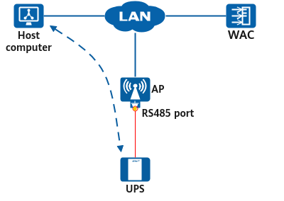

Configuring the RS485 Port on an AP
Prerequisites
Before configuring the RS485 port on an AP, you have completed the following tasks:
- Connect the uninterruptible power supply (UPS) to the AP's RS485 port.
- Ensure that the network between the AP and a computer is reachable.
- Configure parameters for the host computer to interconnect with the AP.
Context
As shown in Figure 1, an AP has an RS485 port that can transparently transmit RS485 packets. After the AP sets up a TCP or UDP link with a host computer, the host computer can remotely manage the UPS through the AP's RS485 port. The host computer and AP set up a link with each other using the client/server (C/S) architecture. The AP can function as a client or server. In actual deployments, you can determine the AP role based on the role supported by the host computer. When configuring interconnection parameters, ensure that the client uses the same communication protocol as the server.


This function is supported only by intrinsically safe APs that support communication with the UPS.
The RS485 packet structure may vary depending on the specific vendor. To ensure that the functions are available, select the host computer and UPS that support the same RS485 packet structure.
Procedure
- Enter the system view.
system-view - Enter the WLAN view.
wlan - Create an IoT profile and enter its view.
iot-profile name profile-name
By default, no IoT profile is created.
- Configure host computer parameters.
management-server { domain domain-name | server-ip server-ip } server-port server-port-num [ ext-channel ]
By default, no host computer is configured.
- Return to the WLAN view.
quit - Enter the AP view or AP group view.
- Enter the AP group view.
ap-group name group-name
- Enter the AP view.
ap-id ap-id
The configurations take effect in the following views listed in descending order of priority: IoT card interface view of an AP, IoT card interface view of an AP group.
- Enter the AP group view.
- Enter the IoT card interface view.
card 1 - Bind the IoT profile and configure the local port number mapping to the IoT card interface. A port number within the range from 50200 to 50202 is recommended. If another port number is used, a port conflict may occur, which generates an alarm.
- When the AP functions as a client, configure the protocol used by the AP to communicate with the host computer.
iot-profile profile-name config-agent { tcp | udp }
- When the AP functions as a server, configure the protocol and local port number used by the AP to communicate with the host computer.
iot-profile profile-name config-agent { tcp | udp } port port
- When the AP functions as a client, configure the protocol used by the AP to communicate with the host computer.
- (Optional) Configure the baud rate used by the AP to communicate with the IoT card.
baud-rate { 9600 | 19200 | 38400 | 57600 | 115200 | 921600 }
By default, no baud rate is configured, and an AP can automatically adapt to the baud rate.
In most cases, an AP can adjust the baud rate adaptively with an IoT card. However, for some special cards, such as a card with an RS485 port, the AP does not support baud rate adaptation. In this case, set this parameter to the same as the baud rate of the card.
Verifying the Configuration
- Run the display ap ap-id card { all | card-number | usb } command to check detailed information about cards on an AP.
- Check information reported by the UPS on the host computer.
- Run the display iot-profile { name profile-name | all } command to check the IoT profile configuration.